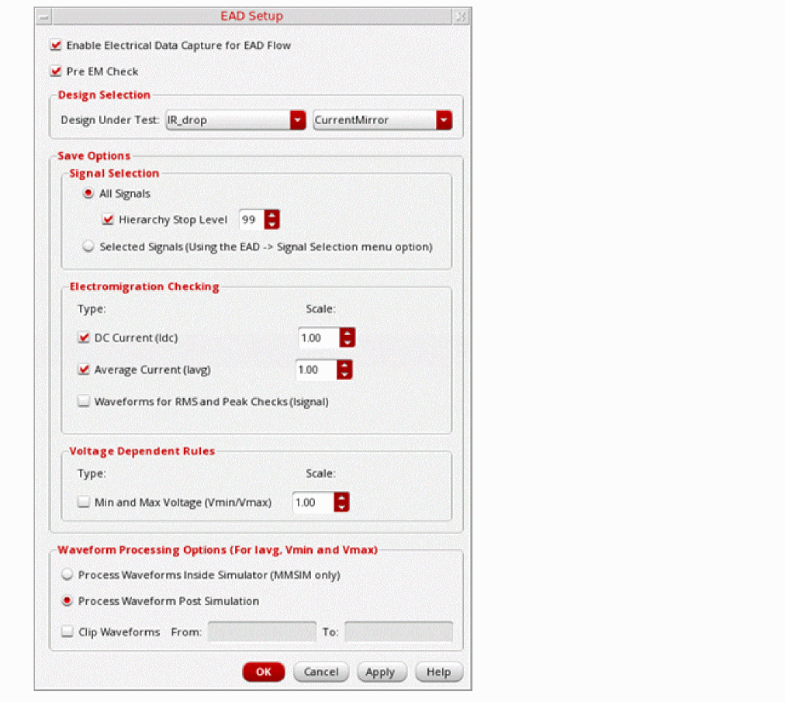
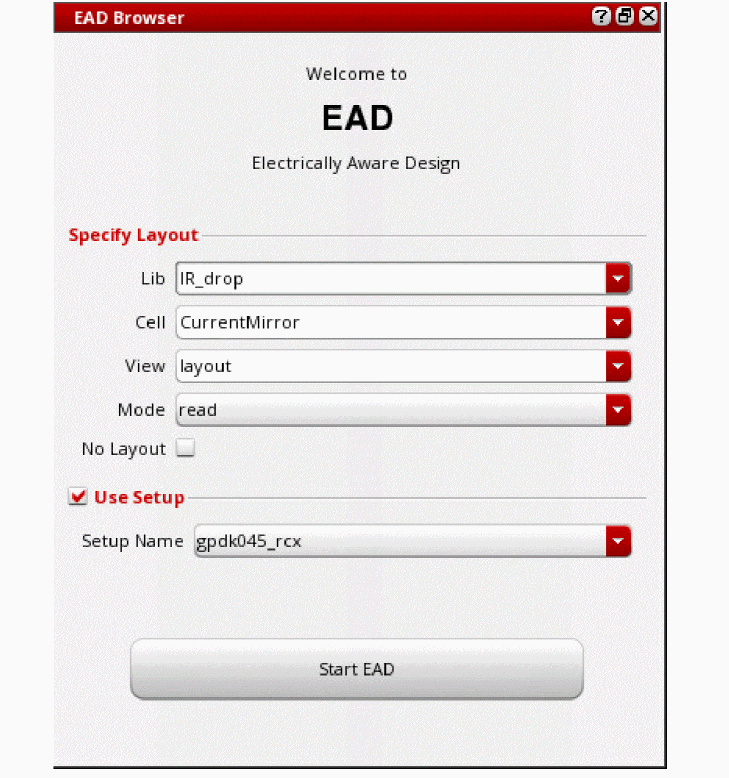
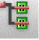

3
Running the Pre-Layout Electromigration Check
You can run the pre-layout EM check (pre-EM check) on the specified layers of a Pcell. This helps in identifying and resolving EM violations even before creating the actual circuit layout.
Running the pre-EM check automatically creates a scratch layout view based on the device parameters that you specify. It then runs the EM check on the scratch layout and generates a report that lists EM violations. The report also provides recommendations on how to resolve the reported violations, if any.
The pre-EM check reports violations at the terminals where J/Jmax ratio is greater than or equal to 1. The default threshold percentage value is 100. You can modify the threshold value using the preEMViolThresholdPercent environment variable.
Setting Up Environment Variables for the Pre-EM check
Ensure that you set the following environment variables before running the pre-EM check:
Running the Pre-EM Check
You can run the pre-EM check as part of simulation runs in ADE XL, ADE Explorer, and ADE Assembler. For this, you need to first enable the pre-EM check mode in EAD setup.
During the simulation run, a scratch layout is internally created and the pre-EM check is run on the scratch layout. After the simulation is complete, electrical data is automatically saved as CSV datasets and a pre-EM report is generated.
Follow these steps to enable and run the pre-EM check:
-
From the menu bar, choose EAD – Setup.
The EAD Setup form is displayed.
 - Select the Enable Electrical Data Capture for EAD Flow check box.
-
Select the Pre EM Check check box.
- Ensure that the design for which you need to perform electromigration analysis is displayed in the Design Selection section.
- Specify the signal and methods to save electric data. For more information about how to set these options, refer to Preparing the EAD Setup for Simulation.
- Click OK.
-
On the Run toolbar, click Run Simulation.
After the simulation finishes, the EM report opens, displaying the details of the instances and their terminals where EM violations are reported. The report also provides recommendations on how to resolve the reported violations. For more information about the pre-EM report, refer to Understanding the Pre-EM Report.
If you want to view the EM report again, click View PreEM Violations in the EAD results view as shown in the following figure.
Understanding the Pre-EM Report
The pre-EM report provides the following details:
- Information about the layout and schematic cellviews, and datasets used for EM check
- A summary of pass or fail status of the EM check and recommended number of fingers to resolve the EM violations, if any
-
Details of the instances and their terminals where EM violations are reported–J/Jmax ratio, m-Factor, no of terms, no of current fingers, and recommended number of fingers to resolve the reported EM violationsTo view the detailed pre-EM report, ensure that the preEMDetailReport environment variable is set to
t.
The following figure shows an example of a pre-EM report:
You can also view the details of the reported violations in the Annotation Browser of Virtuoso Schematic Editor, as shown in the following figure.
If required, you can view the saved CSV datasets by loading the history results in ADE Assembler. To view the datasets, in the EAD results view, from the Maestro View and History drop-down lists, select ALL. The CSV datasets are displayed in the datasets table as shown in the following figure.
Performing What-If Analysis Based on the Pre-EM Check Results
After analyzing the violations reported in the pre-EM check, you can make the suggested changes in the design, and verify the results by running the pre-EM checks again in ADE XL, ADE Explorer, or ADE Assembler.
Alternatively, you may want to reuse the results saved in the CSV datasets, and run a what-if analysis by making some changes in the setup, for example, changing the EM temperature or electrical data in the dataset. You can then run the EM checks using the EAD Browser in Virtuoso Schematic Editor, as explained below.
Preparing the Setup for What-If Analysis
Follow these steps to prepare the set up for what-if analysis:
- Open the design under test (DUT) in Virtuoso Schematic Editor.
-
From the schematic editor menu, choose Launch – Plugins – EAD.
The EAD Browser assistant is displayed.
 - Select the No Layout check box.
- In the Use Setup section, ensure that the correct setup is selected in the Setup Name drop-down list.
- Click Start EAD.
- Import the dataset that has the latest electrical data used for running the pre-EM check by performing the following actions:
- By default, the EM checker is disabled in the Schematic EAD. To enable the EM checker, perform the following actions:
After the setup is ready, you can run what-if analysis. The following sections describes a few examples of performing the analysis:
- Editing Terminal Currents in Datasets for What-If Analysis
- Editing EM Temperature for What-If Analysis
Editing Terminal Currents in Datasets for What-If Analysis
Follow these steps to edit the values of terminal current and to analyze its effect on EM violations:
-
In the EAD Browser of Virtuoso Schematic Editor, click the EM tab.
-
Select a net in the summary pane and click Edit currents on the EM tab toolbar to display the Terminal Electrical Values table. The Terminal Electrical Values table in the detail pane lists all the terminals on the selected net with the electrical values from the dataset.
- Double-click the cell next to the terminal to edit its current value.
-
On the EAD Browser toolbar, click Run Pre-EM Checker (
 ).
). -
Select the location where you want to save the log file that contains the detailed report of EM analysis, and then click Save.
The EM report opens. Analyze the effect of changing the terminal current on the EM violations.
Editing EM Temperature for What-If Analysis
Follow these steps to edit the EM temperature and to analyze its effects on the EM violations:
-
In the EAD Browser toolbar of Virtuoso Schematic Editor, click the drop-down arrow next to the Options button to display additional commands, and then choose Edit Options.
The EAD Options form opens. - Click the EM tab.
- In the Temperature section, edit the value of EM temperature in the EM Temperature field.
- Click OK.
- On the EAD Browser toolbar, click Run Pre-EM Checker ().
-
Select the location where you want to save the log file that contains the detailed report of EM analysis, and then click Save.
The EM report opens. Analyze the effect of EM temperature on the EM violations.
Return to top